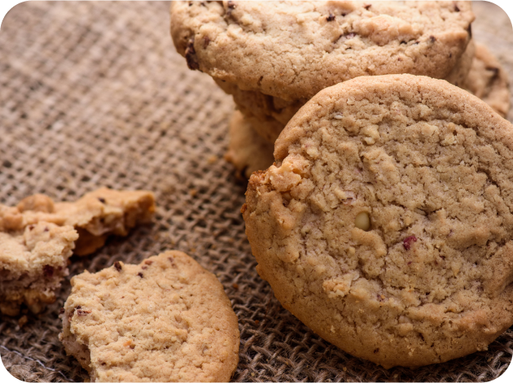

gạch đỏ | 11/03/2025
Mỗi Ngày - Đặc Quyền Cho Bữa Sáng
Ngoài bánh biscotti truyền thống, có nhiều phiên bản và biến thể khác nhau như bánh biscotti với nhân sô cô la, matcha...
gạch đỏ | 11/03/2025
Tinh Hoa Bánh Biscotti Tươi Ngon
Quá trình làm bánh yêu cầu sự kỹ càng và tập trung cao độ, từ việc nhào bột cho đến việc lăn và phân lớp lớp bơ giữa các lần gấp...
GẠCH ĐỎ | 11/03/2025
Sự Lựa Chọn Hoàn Hảo Cho Mọi Thời Điểm!
Điều này giúp tạo ra lớp vỏ bánh mỏng mà vẫn giữ được sự giòn tan đặc trưng của bánh biscotti...
GẠCH ĐỎ | 11/03/2025
Thưởng Thức Bánh Biscotti Thơm Ngon
Việc thưởng thức một chiếc bánh biscotti không chỉ là thưởng thức hương vị tuyệt vời mà còn...
GẠCH ĐỎ | 11/03/2025
Sự Hài Lòng Tuyệt Đối Từ Mỗi Miếng Bánh
Một phần của trải nghiệm văn hóa và ẩm thực đặc biệt. Với mỗi hơi thở, từng miếng bánh giòn tan mang đến cảm giác hài hòa giữa...
GẠCH ĐỎ | 11/03/2025
Đảm bảo Chất Lượng và Sự Hài Lòng
Hương vị bơ thơm ngậy và sự giòn tan của vỏ bánh, tạo nên một trải nghiệm ẩm thực khó quên...
KHÁM PHÁ HƯƠNG VỊ ĐẶC BIỆT CỦA BÁNH BISCOTTI TẠI GẠCH ĐỎ
Bánh biscotti có nguồn gốc từ Ý, ra đời vào khoảng thế kỷ 18. Và cho đến nay, loại bánh này vẫn được nhiều người ưa chuộng bởi sự bổ dưỡng và có thể bảo quản được rất lâu. Đây là một món ăn phổ biến trong các bữa trà chiều hoặc thưởng thức với cà phê, đặc biệt là ở Ý.
GẠCH ĐỎ | 11/03/2025
Khám phá hương vị đặc biệt của bánh biscotti
Bánh biscotti không chỉ là món ăn phổ biến mà còn là một biểu tượng của nền văn hóa ẩm thực Ý, mang hương vị thơm ngon...
GẠCH ĐỎ | 11/03/2025
"Bánh Biscotti Tươi Mỗi Ngày! Bữa ăn nhẹ!"
Để làm bánh biscotti ngon, các nguyên liệu chính như bột mì, trái cây sấy khô và hạt khô bánh phải được sử dụng với tỉ lệ chính xác....
gạch đỏ | 11/03/2025
"Thưởng thức Biscotti chất lượng tại Gạch Đ...
Quá trình làm bánh yêu cầu sự kỹ càng và tập trung cao độ, từ việc nhào bột cho đến việc lăn và phân lớp lớp bơ giữa các lần gấp...